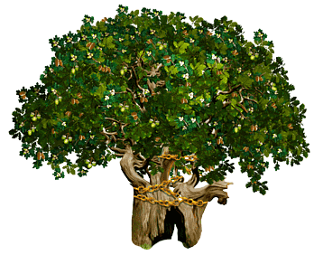

Кот Ученый
Персонаж фольклора, литературы и искусства.
 //данная какртинка является запасным вариантом если не сработет основной.
Место жительства:Лукоморье
Род занятий:рассказывает сказки,поет песни
Подробнее на сайте